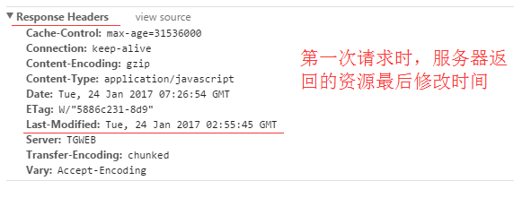

前言
Http 缓存机制作为 web 性能优化的重要手段，对于从事 Web 开发的同学们来说，应该是知识体系库中的一个基础环节，同时对于有志成为前端架构师的同学来说是必备的知识技能。
但是对于很多前端同学来说，仅仅只是知道浏览器会对请求的静态文件进行缓存，但是为什么被缓存，缓存是怎样生效的，却并不是很清楚。
在此，我会尝试用简单明了的文字，像大家系统的介绍HTTP缓存机制，期望对各位正确的理解前端缓存有所帮助。
在介绍HTTP缓存之前，作为知识铺垫，先简单介绍一下HTTP报文
HTTP报文就是浏览器和服务器间通信时发送及响应的数据块。
浏览器向服务器请求数据，发送请求(request)报文；服务器向浏览器返回数据，返回响应(response)报文。
报文信息主要分为两部分
1.包含属性的首部(header)————————–附加信息（cookie，缓存信息等）与缓存相关的规则信息，均包含在header中
2.包含数据的主体部分(body)———————–HTTP请求真正想要传输的部分
缓存规则解析
为方便大家理解，我们认为浏览器存在一个缓存数据库,用于存储缓存信息。
在客户端第一次请求数据时，此时缓存数据库中没有对应的缓存数据，需要请求服务器，服务器返回后，将数据存储至缓存数据库中。

HTTP缓存有多种规则，根据是否需要重新向服务器发起请求来分类，我将其分为两大类(强制缓存，对比缓存)
在详细介绍这两种规则之前，先通过时序图的方式，让大家对这两种规则有个简单了解。
已存在缓存数据时，仅基于强制缓存，请求数据的流程如下

已存在缓存数据时，仅基于对比缓存，请求数据的流程如下

对缓存机制不太了解的同学可能会问，基于对比缓存的流程下，不管是否使用缓存，都需要向服务器发送请求，那么还用缓存干什么？
这个问题，我们暂且放下，后文在详细介绍每种缓存规则的时候，会带给大家答案。
我们可以看到两类缓存规则的不同，强制缓存如果生效，不需要再和服务器发生交互，而对比缓存不管是否生效，都需要与服务端发生交互。
两类缓存规则可以同时存在，强制缓存优先级高于对比缓存，也就是说，当执行强制缓存的规则时，如果缓存生效，直接使用缓存，不再执行对比缓存规则。
强制缓存
从上文我们得知，强制缓存，在缓存数据未失效的情况下，可以直接使用缓存数据，那么浏览器是如何判断缓存数据是否失效呢？
我们知道，在没有缓存数据的时候，浏览器向服务器请求数据时，服务器会将数据和缓存规则一并返回，缓存规则信息包含在响应header中。
对于强制缓存来说，响应header中会有两个字段来标明失效规则（Expires/Cache-Control）
使用chrome的开发者工具，可以很明显的看到对于强制缓存生效时，网络请求的情况

Expires
Expires的值为服务端返回的到期时间，即下一次请求时，请求时间小于服务端返回的到期时间，直接使用缓存数据。
不过Expires 是HTTP 1.0的东西，现在默认浏览器均默认使用HTTP 1.1，所以它的作用基本忽略。
另一个问题是，到期时间是由服务端生成的，但是客户端时间可能跟服务端时间有误差，这就会导致缓存命中的误差。
所以HTTP 1.1 的版本，使用Cache-Control替代。
Cache-Control
Cache-Control 是最重要的规则。常见的取值有private、public、no-cache、max-age，no-store，默认为private。
private: 客户端可以缓存
public: 客户端和代理服务器都可缓存（前端的同学，可以认为public和private是一样的）
max-age=xxx: 缓存的内容将在 xxx 秒后失效
no-cache: 需要使用对比缓存来验证缓存数据（后面介绍）
no-store: 所有内容都不会缓存，强制缓存，对比缓存都不会触发（对于前端开发来说，缓存越多越好，so…基本上和它说886）
举个板栗

图中Cache-Control仅指定了max-age，所以默认为private，缓存时间为31536000秒（365天）
也就是说，在365天内再次请求这条数据，都会直接获取缓存数据库中的数据，直接使用。
对比缓存
对比缓存，顾名思义，需要进行比较判断是否可以使用缓存。
浏览器第一次请求数据时，服务器会将缓存标识与数据一起返回给客户端，客户端将二者备份至缓存数据库中。
再次请求数据时，客户端将备份的缓存标识发送给服务器，服务器根据缓存标识进行判断，判断成功后，返回304状态码，通知客户端比较成功，可以使用缓存数据。
第一次访问：

再次访问：

通过两图的对比，我们可以很清楚的发现，在对比缓存生效时，状态码为304，并且报文大小和请求时间大大减少。
原因是，服务端在进行标识比较后，只返回header部分，通过状态码通知客户端使用缓存，不再需要将报文主体部分返回给客户端。
对于对比缓存来说，缓存标识的传递是我们着重需要理解的，它在请求header和响应header间进行传递，
一共分为两种标识传递，接下来，我们分开介绍。
Last-Modified / If-Modified-Since
Last-Modified：
服务器在响应请求时，告诉浏览器资源的最后修改时间。

If-Modified-Since：
再次请求服务器时，通过此字段通知服务器上次请求时，服务器返回的资源最后修改时间。
服务器收到请求后发现有头If-Modified-Since 则与被请求资源的最后修改时间进行比对。
若资源的最后修改时间大于If-Modified-Since，说明资源又被改动过，则响应整片资源内容，返回状态码200；
若资源的最后修改时间小于或等于If-Modified-Since，说明资源无新修改，则响应HTTP 304，告知浏览器继续使用所保存的cache。

Etag / If-None-Match（优先级高于Last-Modified / If-Modified-Since）
Etag：
服务器响应请求时，告诉浏览器当前资源在服务器的唯一标识（生成规则由服务器决定）。

If-None-Match：
再次请求服务器时，通过此字段通知服务器客户段缓存数据的唯一标识。
服务器收到请求后发现有头If-None-Match 则与被请求资源的唯一标识进行比对，
不同，说明资源又被改动过，则响应整片资源内容，返回状态码200；
相同，说明资源无新修改，则响应HTTP 304，告知浏览器继续使用所保存的cache。

总结
对于强制缓存，服务器通知浏览器一个缓存时间，在缓存时间内，下次请求，直接用缓存，不在时间内，执行比较缓存策略。
对于比较缓存，将缓存信息中的Etag和Last-Modified通过请求发送给服务器，由服务器校验，返回304状态码时，浏览器直接使用缓存。
浏览器第一次请求：

浏览器再次请求时：